The complete, illustrated guide to the drill platform — for agents and pit managers who run the drills, and for the supervisors, directors, and casino managers who have to answer for the numbers. Every screen shown here is the live application.
Every rule, threshold, and formula in these pages was taken from the code that actually runs and the database it runs against — not from a specification. Where a number could be read two ways, this manual says which one the application means.
| Part | Who it is for | What it covers |
|---|---|---|
| I — Everyone | All users | What the platform is, who is in it, how to sign in, and the first-login tour. |
| II — The drill portal | Agents · Pit Managers | Every screen you use on shift, plus the rules that decide what a session is worth. |
| III — Management | Supervisors · Shift Managers · Heads | Every management screen with every number defined, the head-only tools, the routines that turn them into action, and the exports. |
| IV — Reference | Management | The access matrix, one table of metric definitions, and how the platform protects its data. |
| V — Support | All users | FAQ, documented behaviours that catch people out, and a one-page quick reference card. |
Parts I and II are meant to be read once, start to finish. Part III is deliberately precise — these numbers end up in compliance conversations — and Parts IV and V are for looking things up.
Every screen in this manual was captured from the live application, but the people are
fictional (names such as “Sam Trainee”, IDs such as Z-01) and the session history
is seeded test data. Your screens will show your real team, and totals such as “9 agents” or
“451 questions” will differ. The layout, controls, and rules are exactly what you will see.
What the platform is, who is in it, and how to get in. Four pages that every user — agent, pit manager, supervisor, or head — should read once.
A.S.S.E.T. — Aruba Surveillance Skill Enhancement & Training — is the department's web-based drill platform. It keeps payout math, game-protection knowledge, and floor procedures sharp through short scored drills, and gives supervisors and directors an evidenced view of team readiness.
Ten-question scored sessions drawn from the live game and procedure pools, capped at ten minutes.
Unlimited, unscored practice with instant feedback, plus dedicated skill trainers.
Scores, accuracy, weak areas, monthly certification, and exportable compliance records.
The platform serves two departments that never see each other's people or results — the department wall. Everyone signs in the same way; what appears afterwards depends entirely on the role attached to the account.
| Role | Dept. | Portal | What they do |
|---|---|---|---|
| Agent | Surveillance | Drill portal | Runs drills, practice, and trainers; tracks own progress and certification. |
| Pit Manager | Pit | Drill portal | Identical drills, scoring, and rules; sidebar is labelled “Pit Operations”. |
| Supervisor | Surveillance | Management | Team performance and reports; creates and edits questions. |
| Shift Manager | Pit | Management | The Pit equivalent of Supervisor — same pages, Pit staff only. |
| Director head | Surveillance | Management + Admin | Everything a supervisor sees, plus Scorecard, Audit Digest, Remediation, and User Management. |
| Casino Manager head | Pit | Management + Admin | The same head tools, scoped to Pit staff. |
Surveillance staff and Pit staff never appear in each other's dashboards, leaderboards, reports, audit records, or exports. This is enforced on the server — not merely hidden in the interface — so it holds regardless of how a page is reached.
agent, supervisor, director.
Pit = pit_manager, shift_manager, casino_manager.
Every management query and reporting function re-derives the caller's department from their
signed-in identity and filters to it. Shared across the wall: the question pool,
the games, and the resource library. Never shared: people, sessions, answers,
audit entries, notes, and benchmarks.
You sign in with the Employee ID and password your administrator handed you. There is no public sign-up, no email address to confirm, and no self-service reset.
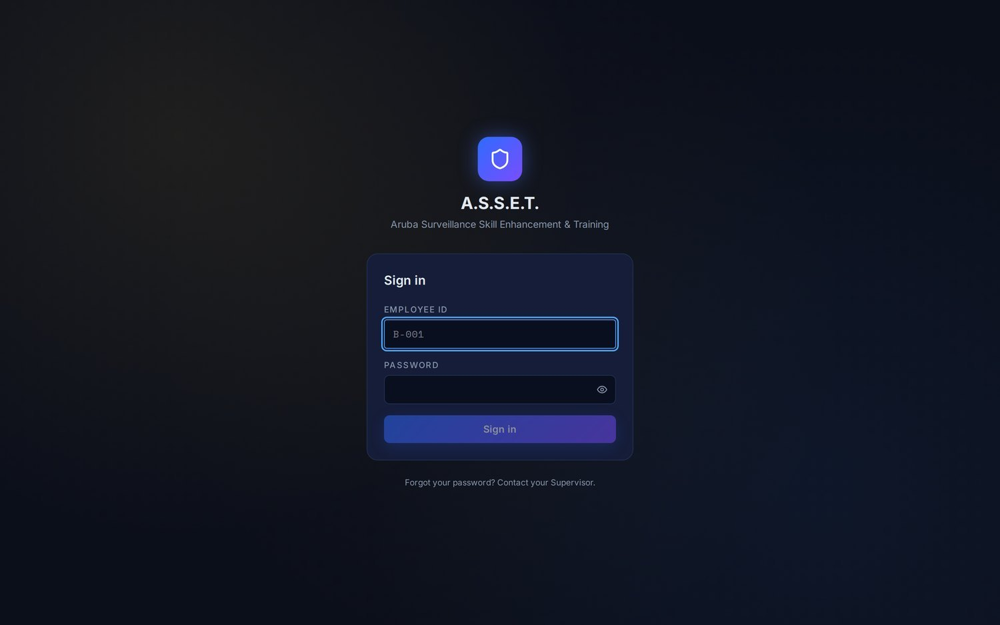
B-24)
and password, then select Sign in. The eye icon reveals the password as you type.After 5 failed attempts within 15 minutes the Employee ID is temporarily locked and the message reads “Account locked — too many failed attempts. Try again in 15 minutes.” Wait for the window to pass, or ask a department head. Every attempt — successful or not — is recorded, and heads can see failed-attempt counts per employee in the Audit Digest (§7.2).
Once signed in, open Change Password from the sidebar (under Help). The change is immediate and needs no approval. Requirements are shown live as you type: at least 8 characters, at least one number, and both fields matching.
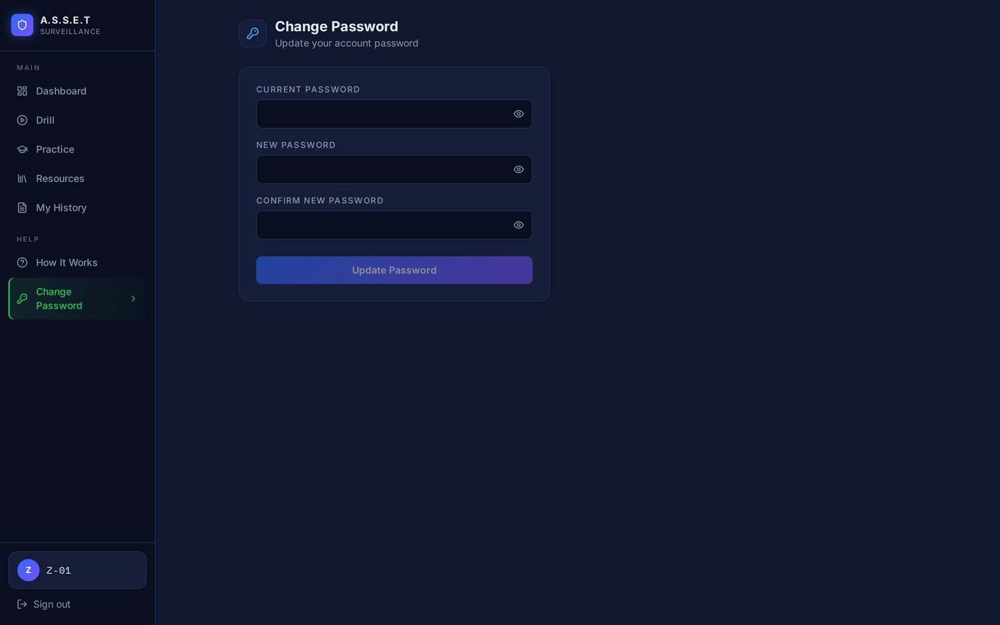
| Cause | How fast | What you see |
|---|---|---|
| 30 minutes idle | Immediately at 30:00 | Returned to the login screen. Any drill in progress is recorded as abandoned. |
| Head forces a logout | Within about a minute | Returned to the login screen. You can sign straight back in — a forced logout ends the current session, it does not block the account. |
| Account deactivated | At next sign-in | “Your account has been deactivated. Contact your administrator.” |
The first time an agent or pit manager signs in, a five-step tour explains the essentials before the first drill. Move with Next/Back; it appears once per account.
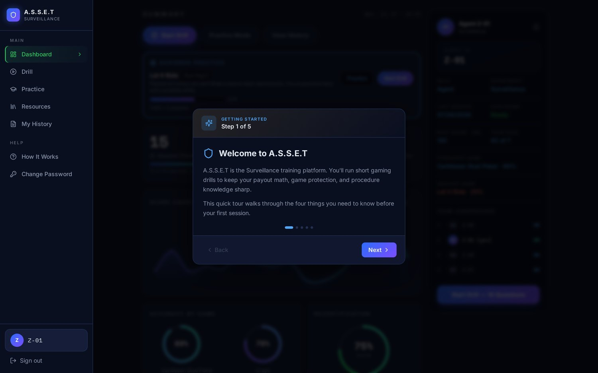
For agents and pit managers — the screens you use every shift, and the rules that decide what a session is worth.
The left sidebar is your map: Dashboard, Drill, Practice, Resources, and My History under Main; How It Works and Change Password under Help. Your Employee ID and Sign out sit at the bottom. On a phone, open it with the ☰ icon.
Your home screen summarises where you stand right now: sessions completed this month, recent average score, cooldown state, per-game accuracy, recertification progress, and your rank within your own department.
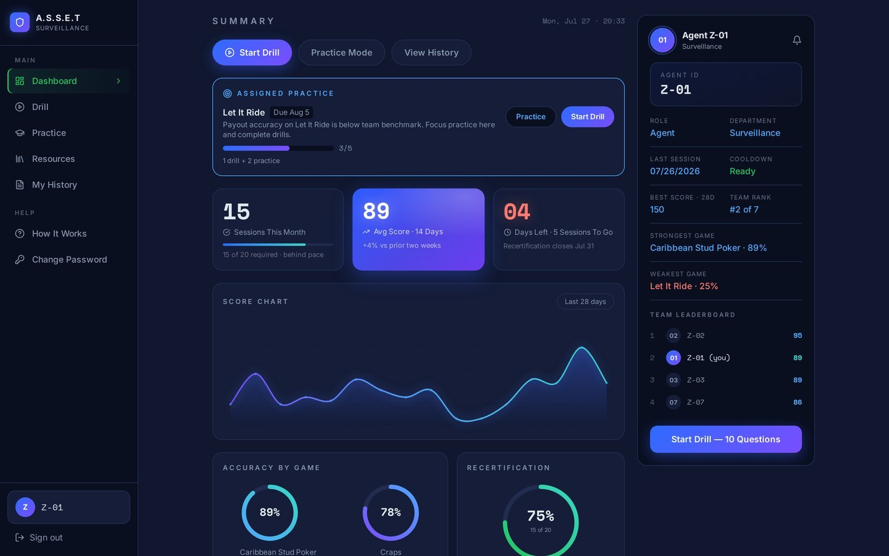
| On the Dashboard | What it tells you |
|---|---|
| Sessions This Month | Completed sessions this calendar month, against the 20-session requirement. |
| Avg Score · 14 days | Your recent form. A trend line appears once you have enough sessions to draw one. |
| Days Left / Cooldown | Days remaining in the current month, and whether you may start a scored drill now. |
| Accuracy by Game | Rings showing per-game accuracy; your weakest game is called out by name. |
| Team Leaderboard | Your rank inside your own department. Colleagues appear by Employee ID, not by name. |
| Assigned Practice | Appears only when a head has given you a focus area — see §7.3. |
A drill is a 10-question, 10-minute scored session drawn from across the games and the shared procedure pool. Faster, accurate sessions score higher — see §5.
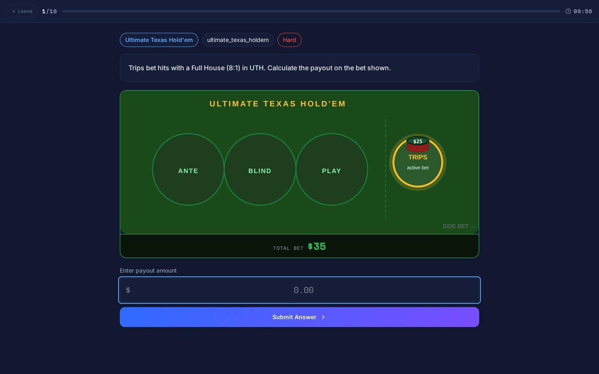
Payout drills — a bet is shown on the felt and you type the dollar payout.
Answers are accepted within a two-cent tolerance, so rounding never costs you a question.
Multiple choice — rules, game-protection, and procedure scenarios; pick the
correct option. Options are shuffled every time the question appears.
The tag beside each question shows Easy / Medium / Hard — difficulty adapts to you (§5.4).
Roulette and Craps tables offer a 2D / 3D view toggle.
Leaving early marks the session abandoned: it scores 0, does not count toward
your 20, and asks you for an optional reason that management can read.
Finishing a session opens a full breakdown, so every miss becomes a lesson.
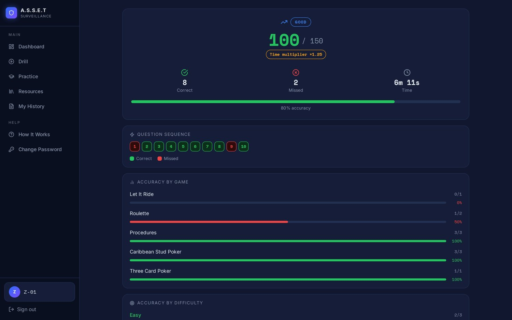
Practice is unlimited and separate from your record. Choose a single game, Procedures, or Mixed — All Games. Questions shuffle and cycle endlessly; there is no pool to exhaust and no cooldown to wait out.
Practice never affects your score, your cooldown, your adaptive difficulty, your certification count, or the question statistics management reads. It does leave two harmless traces — a “practice started” entry in the audit log, and a count of questions answered per game that feeds remediation credit (§7.3). Practising is visible, and that is by design: it is evidence of effort, not a penalty.
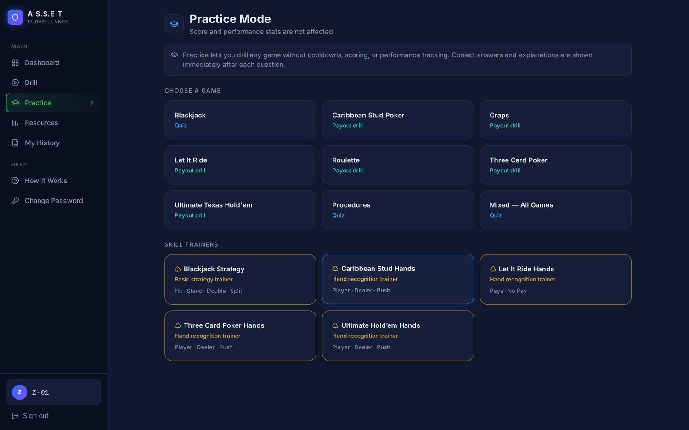
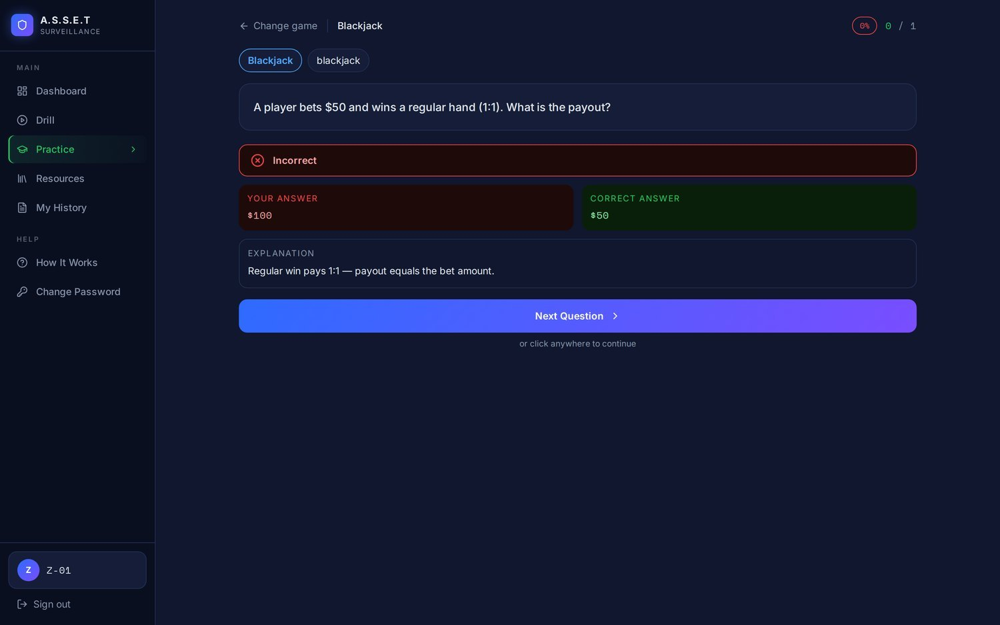
Beyond the games, dedicated trainers drill specific dealer skills: the Blackjack Strategy Trainer and Hand Recognition Trainers for Caribbean Stud, Ultimate Hold'em, Let It Ride, and Three Card Poker. Like practice, they are unscored.
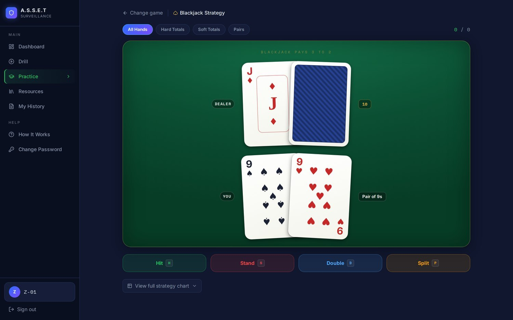
H S D P speed you up; a wrong call shows the
house rule and highlights the matching row of the strategy chart, which is one click away in full.Reference material lives here: rules and payout PDFs, video walkthroughs, a payout calculator, and the trainers — organised by game. Resources are shared across both departments.
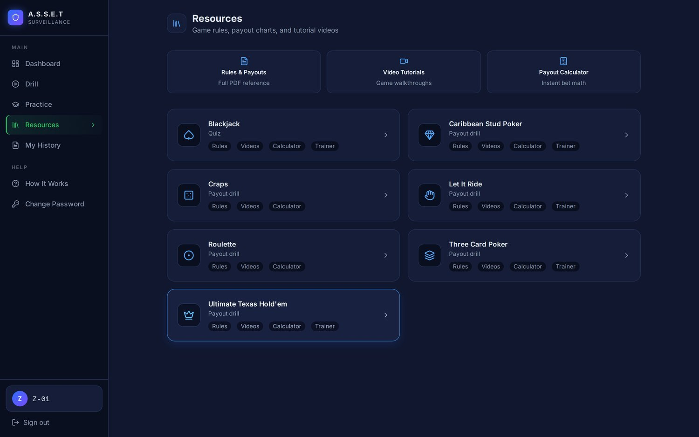
A running log of your sessions with date, status, score, accuracy, and time. Monthly progress, best score, and average sit at the top. Select any row to reopen that session's full Results breakdown.
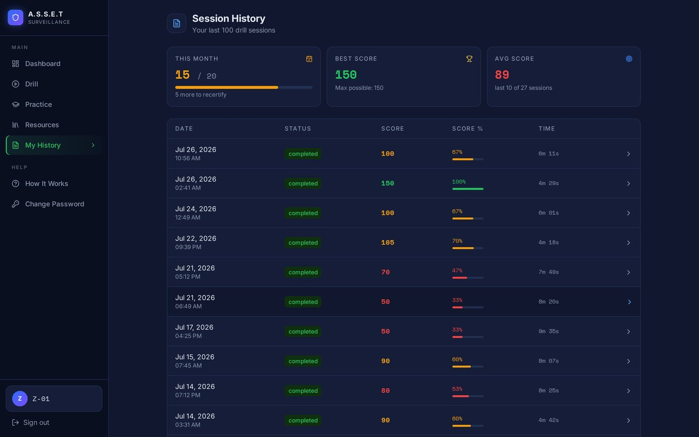
Pit managers use exactly the same portal — same drills, scoring, cooldown, certification, and trainers. The only differences are cosmetic and jurisdictional: the sidebar is labelled Pit Operations, and the leaderboard, benchmark, and every report are scoped to Pit staff.
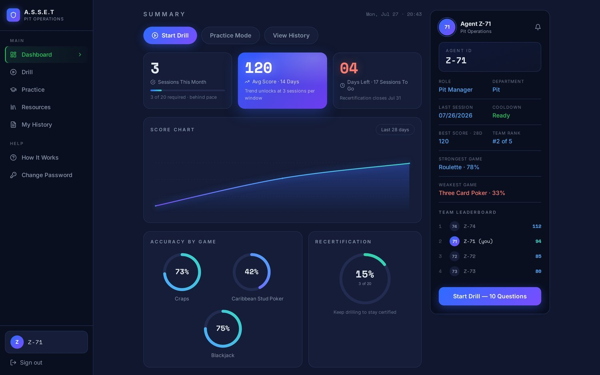
A small number of rules govern every scored drill. They are stated here exactly as the application applies them — this section is the reference both agents and management should quote.
| Finish time | Multiplier | 10/10 | 8/10 | 6/10 |
|---|---|---|---|---|
| ≤ 5:00 | ×1.5 | 150 | 120 | 90 |
| 5:00 – 7:30 | ×1.25 | 125 | 100 | 75 |
| 7:30 – 10:00 | ×1.0 | 100 | 80 | 60 |
After each completed session you must wait 4 hours before starting another scored drill. It is global — there is no per-game bypass — and it is enforced on the server, so reloading, switching device, or clearing the browser will not shorten it. The Drill link in the sidebar greys out and shows a live countdown. Practice is never blocked.
completed_at timestamp of your most recent completed
session. Abandoned sessions do not start a cooldown — if you abandon, you may start again at
once. The countdown the browser shows is a cached copy of the server's answer, refreshed at least
every 30 seconds.
Each game tracks your level independently, from 1 (Easy) to 3 (Hard).
A session is not a random ten. The draw is designed to stay varied, to lean gently toward your weaker games, and never to serve the same near-identical question twice.
roulette_procedure).0.5 + 0.5 × (1 − accuracy),
so a 20 %-accuracy game is about 1.5× as likely as an 80 % one. Weak areas surface more; they do
not take over.Craps questions never appear in a scored drill. The Craps game is flagged practice-only in production, so its 74 active questions are available in Practice (including Mixed) but excluded from scored sessions. This is deliberate — the team drills Craps freely until everyone is ready for it to count. Promoting it later is a single database change and needs no application update. Note that Craps procedure questions, which are shared procedure questions rather than Craps-game questions, do appear in scored drills.
Sessions draw from the active pool at the moment a session starts. At the time of writing:
| Pool | Active questions | In scored drills? | Notes |
|---|---|---|---|
| Blackjack | 178 | Yes | Multiple choice: payouts, side bets, game protection, basic strategy. |
| Procedures (shared) | 165 | Yes | Floor procedures incl. roulette, craps, and CSP procedure sets. Eligible in every session. |
| Let It Ride | 92 | Yes | 28 further questions exist but are deactivated. |
| Caribbean Stud Poker | 78 | Yes | Ante/Bet payouts plus progressive and qualify rules. |
| Craps | 74 | Practice only | Excluded from scored sessions by the practice-only flag. |
| Three Card Poker | 45 | Yes | Pair Plus payout drills. |
| Roulette | 31 | Yes | Payout scenarios are generated fresh on the table layout each time, so the same question is never numerically identical twice. |
| Ultimate Texas Hold'em | 30 | Yes | At the 30-question minimum — watch this pool. |
Counts are active questions at the time of writing and move as questions are added or retired. Read them live in Question Stats (§6.5).
Every management screen, every number defined, and the routines that turn them into action. If a figure in this part ever disagrees with the application, the application is right and this manual needs an update — tell your administrator.
Supervisors, shift managers, and department heads sign in the same way as everyone else and land in the management portal instead of a dashboard. Every view is scoped to your department, every list can be filtered, and every page exports to Excel.
| Group | Page | Who sees it |
|---|---|---|
| Main | Team Dashboard · Completion Tracker · Weak Areas | All management roles |
| Reports | Question Stats · Question Editor · Audit Log | All management roles |
| Reports | Scorecard · Audit Digest | Department heads only |
| Admin | Remediation · User Management | Department heads only |
The command centre: department averages, who is behind on sessions, score-decay alerts, and a searchable roster where every row opens that person's detail page.
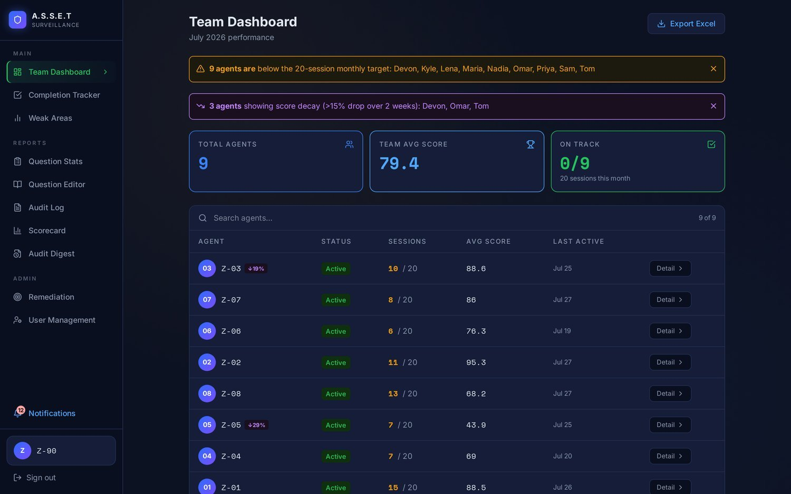
| Element | Exactly what it counts |
|---|---|
| Total Agents | Every drill-taker account in your department, including deactivated ones. The Status column tells you which are active. |
| Team Avg Score | The average of each drill-taker's current-month average score, across the roster. It is an average of averages, not a session-weighted mean; an agent with two sessions counts as much as one with twenty. |
| On Track | How many have already completed 20 or more sessions this calendar month. |
| Sessions column | Completed sessions this calendar month, out of 20. |
| Avg Score column | That person's average score for this calendar month only — blank until they complete a session this month. |
| Last Active | The timestamp of their most recent session. |
| Decay chip ↓19% | Appears beside the name when the two-week comparison in §6.8 finds a drop of 15 % or more. |
1. “Avg Score” is this month, not all time. On the 1st of a month the column empties out and the team average drops to the first few sessions posted. That is expected behaviour, not lost data — history is intact on Agent Detail and in the Scorecard.
2. Deactivated accounts still appear here. The roster is every drill-taker account in the department; a leaver stays on the list — showing 0 sessions and counting toward “below target” — until the account is deleted. Read the Status column before you act on a banner, and see §8.5 for the offboarding routine.
One person, in full: score trend, per-game averages, and the complete session history including the IP address and device recorded for each sitting.
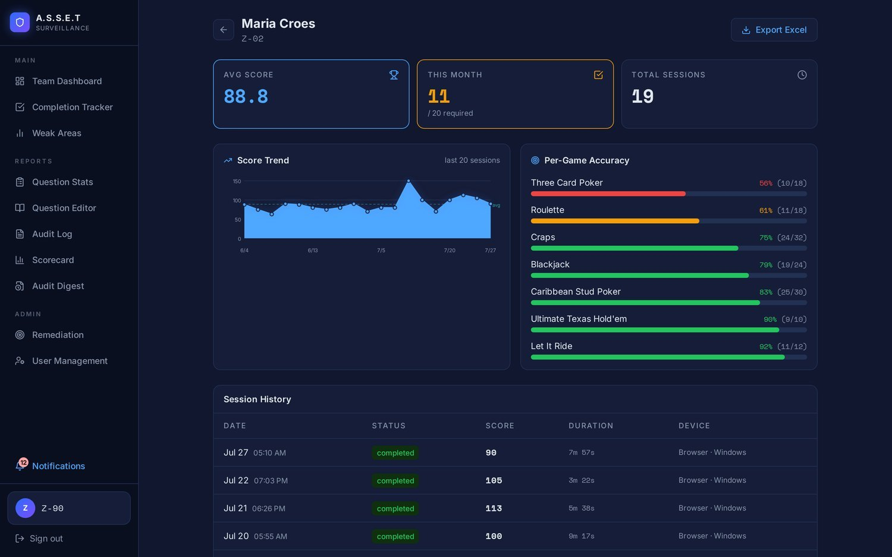
Certification at a glance: who has hit 20 sessions this month and who has not, at what pace they now need to work, and the exceptions you have recorded.
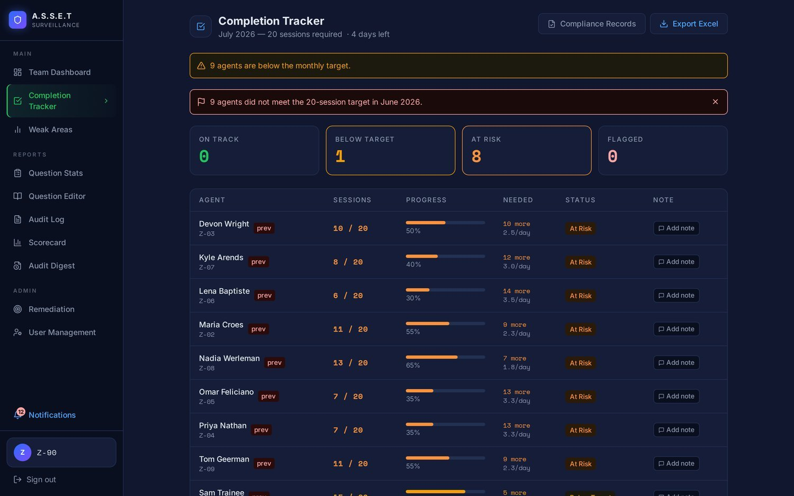
| Status | Rule | How to read it |
|---|---|---|
| On Track | 20 or more sessions completed this month | Certified for the month. Nothing more is required. |
| Below Target | Short of 20, and the remaining shortfall needs 1.5 sessions per day or fewer | Behind but recoverable at a normal pace. |
| At Risk | Short of 20, and the shortfall needs more than 1.5 sessions per day | Will not make it without a deliberate push. This is the group to speak to. |
| Flagged | Short of 20 on the last day of the month | The month is over; the shortfall is now a compliance fact. Record a note if there is a reason. |
needed ÷ days left > 1.5. Remember the four-hour
cooldown caps a realistic day at two or three sessions.
Use Add note on any row to record why a month fell short — approved leave, medical absence, a mid-month transfer. Notes are per agent per month, up to 1000 characters, editable and deletable, and previous months are kept in the row's history. They appear in both Completion exports, so the explanation travels with the number.
| Button | Contents |
|---|---|
| Export Excel | One sheet — the tracker as displayed: ID, name, sessions this month, required, status, last month's sessions, whether last month was missed, and the note. |
| Compliance Records | Two sheets — Summary (as above plus a Compliant yes/no column) and Session Detail, every completed session this month with date, time, score, and duration. This is the file to hand over when someone asks for training evidence. |
Where the department struggles: accuracy by game, the most-failed questions, and per-agent weakest areas — filterable by date range, agent, and game.
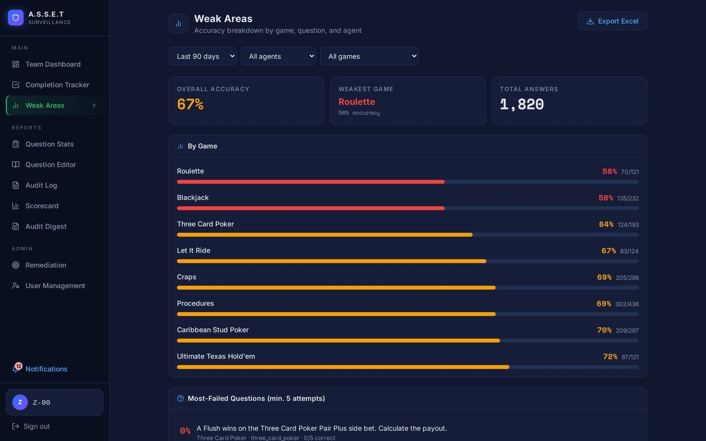
correct answers ÷ answers shown for that game, not an average of per-agent rates.
How each question is performing for your department: how often it has been shown, how often it was answered correctly, and whether it looks too easy or too hard.
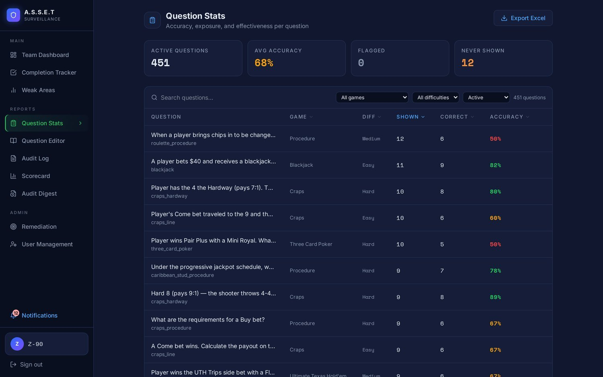
| Flag | Rule | What to do |
|---|---|---|
| Too Easy | Accuracy ≥ 90 % after at least 10 showings | Not automatically a problem — it may simply be well-trained. Consider raising its difficulty or retiring it if it is trivial. |
| Too Hard | Accuracy ≤ 40 % after at least 10 showings | Check the wording and the stored answer first. A genuinely hard question is fine; an ambiguous or wrong one is not. |
| Never shown | Shown = 0 | Newly added, or excluded because its game is practice-only. Expect all Craps questions here. |
Supervisors, shift managers, and heads can add and edit questions in the shared pool. There is one pool for both departments: a question Angelo writes is served to Pit Managers too.
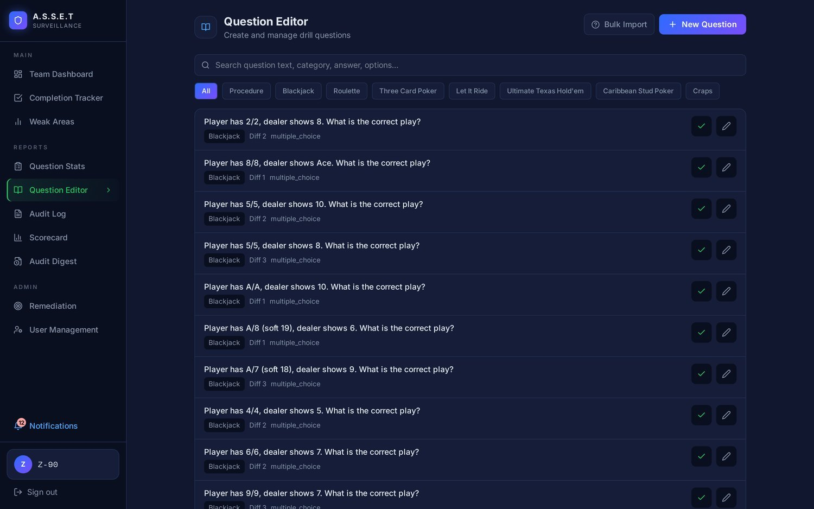
| Field | Rules that matter |
|---|---|
| Game | Pick the game, or tick procedure to make it a shared question with no game. Shared procedure questions are eligible in every session, in both departments. |
| Type | Multiple choice or payout. A payout-drill game can hold both — the interface renders by question type, not by the game's type. |
| Correct answer (payout) | Store the payout ratio, not a dollar amount. 35 for 35:1, 1.5 for 3:2, 1.8 for 9:5. The drill computes bet × ratio and accepts the agent's typed amount within two cents. A dollar figure in this box makes the question permanently unanswerable. |
| Correct answer (choice) | Must match one of the options exactly. Options are shuffled at display time. |
| Explanation | Shown after a wrong answer in both drills and practice. This is where the training actually happens — write the rule, not just the number. |
| Category | Drives which felt band the table layout highlights for payout questions, and the per-category caps in the session draw. Use an existing category unless you have a reason not to. |
| Difficulty | 1 Easy · 2 Medium · 3 Hard. Feeds the adaptive engine. Points stay at 10 regardless. |
| Active | Unticking removes a question from all future draws while preserving its history. This is the correct way to retire a question — there is no delete. |
An append-only record of what happened, with filters for date range (24 hours to all time), employee, and action category, plus free-text search. Drill-takers have no access to it whatsoever.
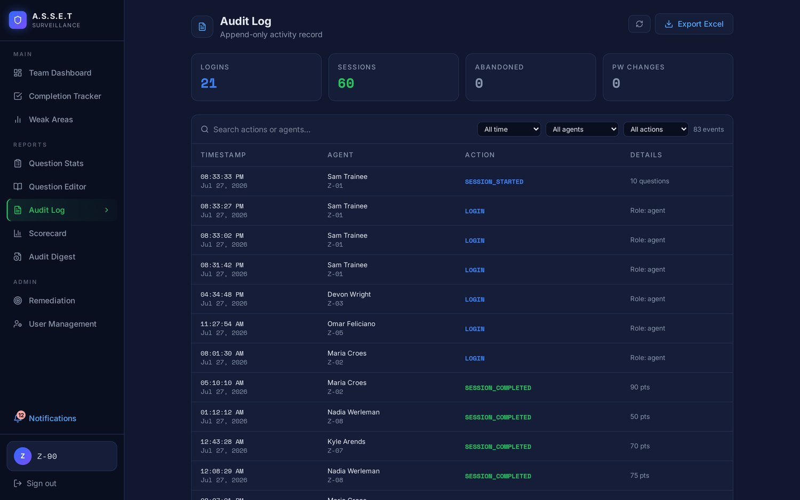
This page lists your department's drill-takers only — agents on the Surveillance side, pit managers on the Pit side.
Actions performed by management — question created/updated/toggled, users created, deactivated, deleted, password reset, forced logout, remediation assigned or closed — are recorded permanently, but they are attributed to the manager who performed them, and managers are not drill-takers, so they do not appear in this list. Read them in the Audit Digest (§7.2), which counts every role in the department. The consequence worth remembering: the “Question edits” filter on this page will normally return nothing.
| Category filter | Events |
|---|---|
| Auth events | Login · Logout · Password change (self-service) |
| Sessions | Drill started · Drill completed (with score and correct count) · Drill abandoned (with the agent's reason) |
| Practice | Practice started, with the scope chosen and the size of the pool |
| Question edits | Question created / updated / activated / deactivated — recorded, but see the correction above |
The sidebar bell collects the two alerts that need a manager's attention: drill-takers who missed last month's target, and drill-takers whose scores are decaying.
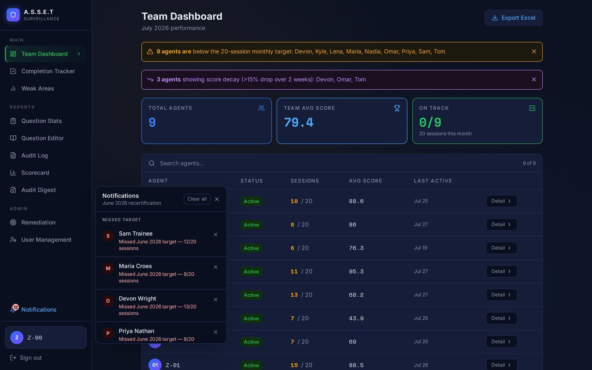
Four pages are reserved for the Director (Surveillance) and the Casino Manager (Pit): two reports that summarise a department, and two tools that act on it. Everything on them respects the same department wall as the rest of the portal.
Month-over-month department KPIs — average score, sessions, active drill-takers, recertification compliance, and accuracy — with delta arrows, sparklines, a monthly detail table, and a per-game accuracy matrix. Six months are shown.
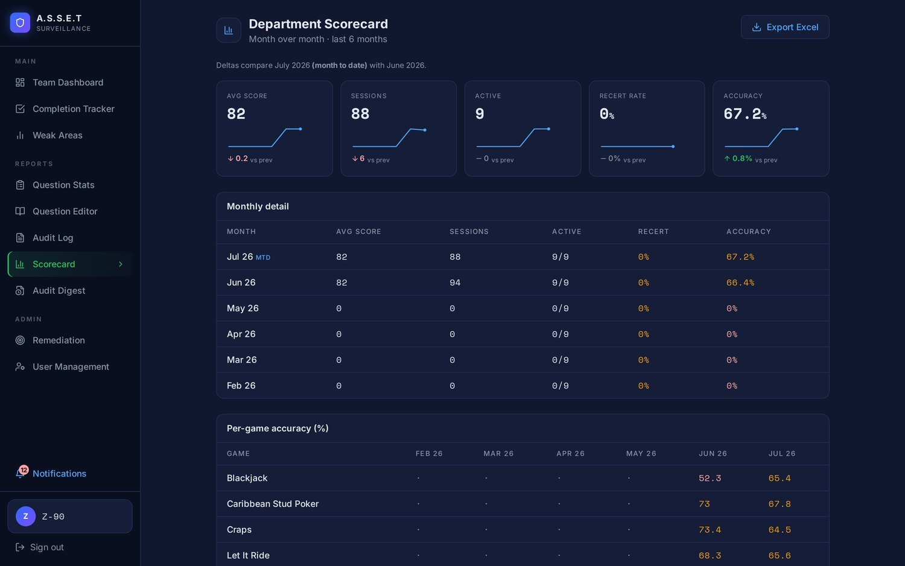
| KPI | Definition |
|---|---|
| Avg Score | The mean score of every completed session in the department that month. Unlike the Team Dashboard tile, this is session-weighted: a heavy driller moves it more than a light one. |
| Sessions | Completed sessions in the department that month. Abandoned sessions are excluded everywhere on this page. |
| Active | Distinct drill-takers with at least one completed session that month — participation, not headcount. |
| Recert Rate | The percentage of the roster that reached 20 completed sessions that month. |
| Accuracy | Correct answers ÷ answers given, across all completed sessions that month. |
| Per-game matrix | The same accuracy calculation split by game, one column per month. A dot means no answers were recorded for that game that month. |
The denominator is today's active roster, applied to every month in the table. If the department had 6 drill-takers in March and has 10 now, March's rate is shown as “out of 10”. This keeps the trend line comparable against the team you manage today, but it means a historic percentage in this table is not the percentage that was true at the time.
For a point-in-time figure — the number to quote in a compliance conversation about a specific month — use the Completion Tracker's Compliance Records export taken during that month, or count the Session Detail sheet.
A period rollup of everything your department did — totals by action, the most active users, security-relevant events, and failed sign-ins — over 24 hours, 7, 30, or 90 days.
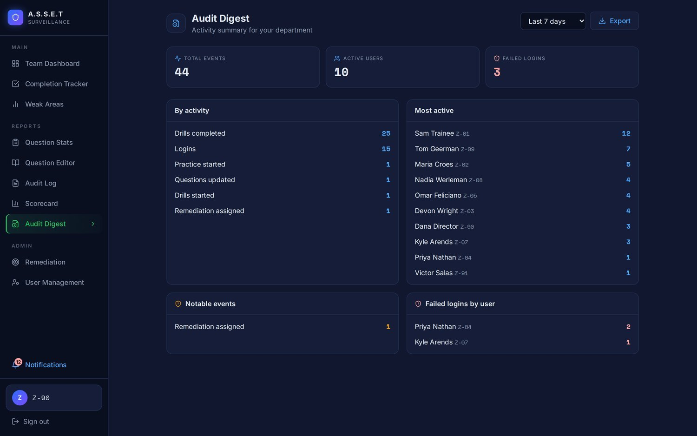
| Panel | What it contains |
|---|---|
| Totals by action | Every recorded action in the period, counted exactly: logins, logouts, self-service password changes, practice starts, drills started / completed / abandoned, question edits, user administration, and remediation events. This is where management's own actions appear. |
| Most active users | The top 15 by event count, across all roles in your department. |
| Notable events | The security-relevant subset: abandoned drills, user created / deleted / deactivated / reactivated, admin password resets, forced logouts, and remediation assigned / completed / cancelled. |
| Failed sign-ins | Failed attempts grouped by employee, with the last attempt time, matched to your department's roster. |
Assign a drill-taker a focus — one game, or Procedures — with an optional note and due date. The assignment appears on that person's Dashboard as an Assigned Practice card with a Practice button that deep-links to the right game and a Start Drill button. Progress is tracked automatically.
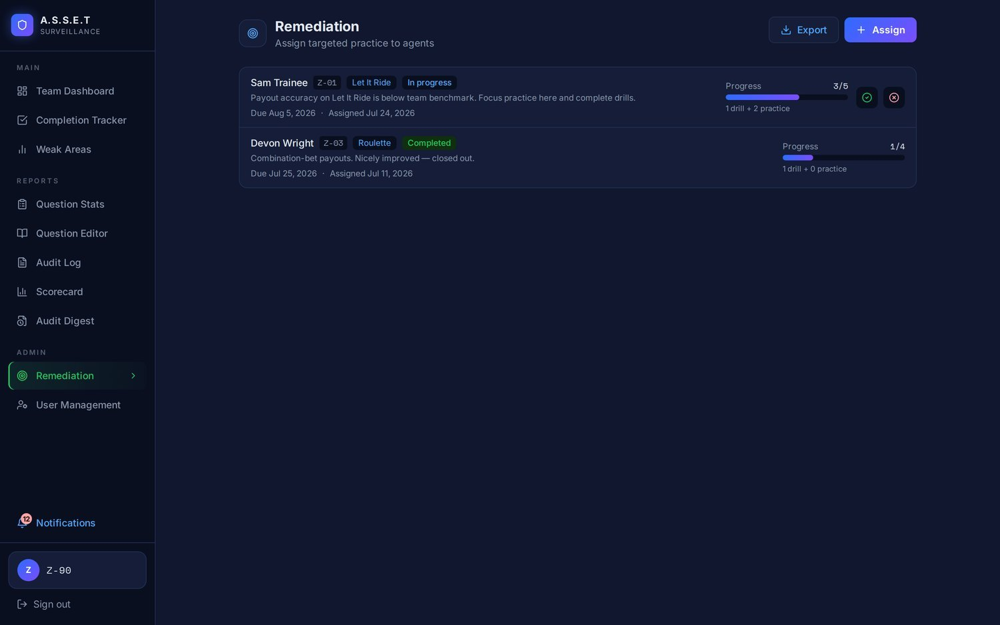
progress ≥ target and at least
one real drill has happened. This drill floor means practice alone can never
certify a remediation; assessment integrity is preserved.| Status | Meaning |
|---|---|
| Assigned | Open and counting. Visible on the agent's Dashboard. |
| Overdue | Open, and past its due date. A display state — still counting. |
| Completed | Reached the target with at least one drill, or a head marked it complete by hand. |
| Cancelled | Closed by a head without completion. Use this when circumstances change; it stays in the record. |
Heads manage their own department's accounts end to end — no ticket to the platform administrator required. Six actions are available, all department-walled, all recorded.
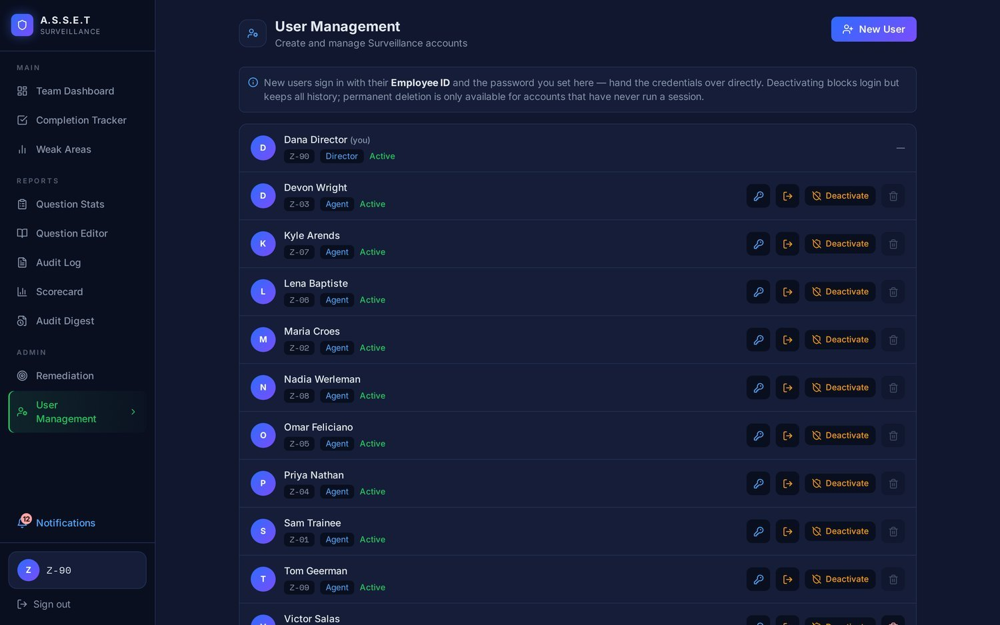
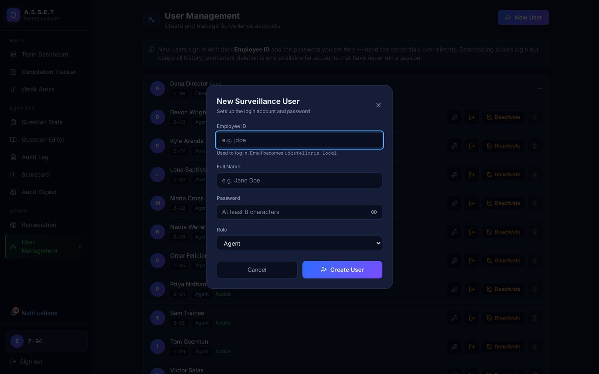
| Action | What it does | Recorded as |
|---|---|---|
| Create user | Adds an account in your department with a role you are allowed to assign. The Director may create agent and supervisor; the Casino Manager may create pit manager and shift manager. | USER_CREATED |
| Reset password | Sets a new password directly, minimum 8 characters. There is no email link — hand it over in person. The password itself is never recorded. | USER_PASSWORD_RESET |
| Force logout | Ends the user's current session within about a minute. It does not prevent them signing back in. | USER_FORCE_LOGOUT |
| Deactivate | The reversible block. The account cannot sign in; all sessions, answers, notes, and audit history are preserved. | USER_DEACTIVATED |
| Reactivate | Restores access with everything intact. | USER_REACTIVATED |
| Delete permanently | Removes the account entirely. Offered only when the user has never completed a session; otherwise the app refuses and directs you to deactivate. | USER_DELETED |
Permanent delete is for mistakes — a typo in an Employee ID, an account created twice, a hire who never started. It removes the account, its difficulty tracking, and its audit-log entries. It cannot be undone, and there is no restore.
For anyone who has actually used the platform, deactivate instead. The application enforces this for you: an account with session history cannot be deleted. Training and compliance records must survive the person leaving.
The screens are only half the system; the routine is the other half. These are the rounds worth running, in the order that makes them quick.
Every management screen exports to Excel. Exports always reflect the filters you have applied and the department you belong to — there is no way to export another department's data.
| Screen | Filters applied first | What the file contains |
|---|---|---|
| Team Dashboard | — | One row per drill-taker: Employee ID, name, role, active yes/no, sessions this month, average score, last session. |
| Agent Detail | The agent you are viewing | That person's session history and per-game performance. |
| Completion Tracker | — | Sessions this month, required, status, last month's count, missed-last-month flag, and the recert note. |
| Completion → Compliance Records | Current month | Two sheets. Summary with a Compliant column, and Session Detail — every completed session with date, time, score, and duration. |
| Weak Areas | Date range · agent · game | Per-game accuracy, the most-failed questions, and per-agent weakest areas as displayed. |
| Question Stats | Game · difficulty · status · search | Question text, game, category, difficulty, shown, correct, accuracy — department-scoped. |
| Audit Log | Date range · employee · action category · search | The rows on screen — remember the 500-row cap. |
| Scorecard head | Six months | Monthly KPI rows and the per-game accuracy matrix. |
| Audit Digest head | Period (24h / 7d / 30d / 90d) | Totals by action, most active users, and the failed-login summary. |
| Remediation head | — | Assignment, focus, progress, status, due date, and note. |
Who can do what, what every number means, and how the platform protects the data it holds. Three sections to look things up in rather than read end to end.
Access is decided by role and confined by department. Nothing in the table below can be granted ad hoc — a capability arrives with a role change, made by a department head (for their own staff) or by the platform administrator (for the heads themselves).
| Capability | Agent / Pit Mgr | Supervisor / Shift Mgr | Director / Casino Mgr |
|---|---|---|---|
| Run scored drills | ✓ | — | — |
| Practice & skill trainers | ✓ | — | — |
| Resources library | ✓ | — | — |
| Own history & certification | ✓ | — | — |
| Change own password | ✓ | ✓ | ✓ |
| Team Dashboard & Agent Detail | — | ✓ | ✓ |
| Completion Tracker & recert notes | — | ✓ | ✓ |
| Weak Areas | — | ✓ | ✓ |
| Question Stats | — | ✓ | ✓ |
| Question Editor (create & edit) | — | ✓ | ✓ |
| Audit Log | — | ✓ | ✓ |
| Notifications (bell) | — | ✓ | ✓ |
| Excel exports | — | ✓ | ✓ |
| Scorecard | — | — | ✓ |
| Audit Digest | — | — | ✓ |
| Remediation | receives | — | assigns |
| User Management (accounts, passwords) | — | — | ✓ |
| Create or change a department head | — | — | admin only |
One table, every number. When two screens seem to disagree, the answer is almost always that they are measuring different windows or different populations — this is where to check.
| Metric | Where it appears | Definition, window, and population |
|---|---|---|
| Session score | Results, History, everywhere | correct × 10 × multiplier, rounded. Multiplier ×1.5 ≤5 min, ×1.25 ≤7½ min, ×1.0 thereafter. Max 150. Abandoned = 0. |
| Sessions this month | Dashboard, Team Dashboard, Completion | Sessions with status completed in the current calendar month, per person. Server-side, UTC month boundary (see §14.1). |
| Avg score (person) | Team Dashboard, Completion | Mean score of that person's completed sessions this calendar month. Empty until they complete one. |
| Avg score · 14 days | Agent Dashboard | Mean score of the person's completed sessions in the last 14 days — a rolling window, not a month. |
| Team Avg Score | Team Dashboard tile | Mean of each roster member's monthly average — an average of averages. Every person counts equally regardless of session count. |
| Avg Score (Scorecard) | Scorecard | Mean of every completed session in the department that month — session-weighted. Will not match the Team Dashboard tile, by design. |
| Accuracy (game) | Weak Areas, Scorecard | correct answers ÷ answers shown for that game, from completed sessions only, within the selected window. Practice excluded. |
| Accuracy (question) | Question Stats | times correct ÷ times shown, recomputed for your department only from completed sessions. |
| Active (Scorecard) | Scorecard | Distinct drill-takers with ≥1 completed session that month. |
| Recert rate | Scorecard | Drill-takers reaching 20 completed sessions that month ÷ today's active roster. See the caveat in §7.1. |
| On Track | Team Dashboard, Completion | Completed sessions this month ≥ 20. |
| At Risk | Completion | Below 20, and (20 − completed) ÷ days left > 1.5. |
| Flagged | Completion | Below 20 on the last day of the month. |
| Score decay | Notifications, Team Dashboard chip | Average of last 14 days vs. the 14 days before, drop ≥ 15 %, requiring ≥3 completed sessions in each window. |
| Cooldown remaining | Sidebar, Dashboard | 4 hours minus the time since the last completed session. Abandoned sessions do not start it. Server-authoritative. |
| Difficulty level | Drill tag, Results | Per person, per game, 1–3. +1 after 3 consecutive correct; −1 after 2 consecutive wrong. Scored drills only. |
| Remediation progress | Remediation, agent Dashboard | Qualifying drills + practice credits since the assignment was created. 10 focused practice questions = 1 credit. Auto-completes at target, but only with ≥1 real drill. |
| Pool health | Question Stats, Question Editor | Active questions per game; warning below 30. Procedures counted as its own pool. |
| Too Easy / Too Hard | Question Stats | ≥90 % / ≤40 % accuracy after at least 10 showings in your department. |
A training platform that holds named performance data has to be defensible. This section states what is protected, what is recorded, and what management is responsible for.
| Control | How it works |
|---|---|
| Authentication | Managed identity provider. Passwords are stored hashed by the auth service — no one, including the platform administrator, can read an existing password. Setting a new one is the only option. |
| Failed-login lockout | 5 failed attempts in 15 minutes locks the Employee ID temporarily. Every attempt is recorded. |
| Session timeout | Automatic sign-out after 30 minutes of inactivity. |
| Forced logout | A head can end a live session; the signed-in browser checks for this roughly every 45 seconds and on window focus. |
| Row-level security | Access rules live in the database, not the interface. A user's role and department are re-derived from their signed-in identity on every query, so a hand-typed address or a modified page cannot reach another department's data. |
| Privileged actions | Creating accounts, resetting passwords, and deleting accounts require a privileged key that never reaches the browser. They run server-side, re-verifying that the caller is an active head acting inside their own department. |
| Audit log | Append-only. Drill-takers have no access at all. It records who did what and when — never passwords. |
| Login attempts | Held in a table with no direct read access; readable only through the department-scoped summary in the Audit Digest. |
| Session integrity | Options are shuffled per display, payout answers are validated against a computed value, the cooldown is enforced on the server, and every session records IP address and device. |
| Client storage | No performance data or credentials are kept in the browser. Only convenience state — dismissed alerts and a short-lived cooldown cache. |
The platform has no automatic retention or purge. Sessions, answers, audit entries, and login attempts accumulate indefinitely, which is what you want for training evidence and what you must be deliberate about for privacy. There is no “delete my data” button, and the only removal path is the permanent delete of an account that has never run a session — which also removes that account's audit entries.
If the property's records policy requires a retention limit, that is a decision to take with the platform administrator and apply deliberately. Document whatever you decide; an undocumented “keep everything forever” is a position, and it should be a chosen one.
The questions people actually ask, the behaviours that surprise people, and one page you can print and pin up.
bet × ratio within two cents. Check that you read the full chip stack — mixed stacks of $1 and $5 chips are deliberate. If the stored answer really is wrong, tell your supervisor: they can correct the question, and Question Stats will show it failing for everybody.None of the following are faults, but each has surprised somebody. They are documented here so they are read rather than discovered.
| # | Behaviour | What it means in practice |
|---|---|---|
| 14.1 | The month boundary is 20:00 Aruba time | Certification counters are computed on a UTC server, so a calendar month turns over at 20:00 local on the last day. Sessions completed between 20:00 and midnight count toward the following month. Some browser-side views (last month's banner and notifications) use local midnight, so during that four-hour window the two can disagree by one session. Finish month-end sessions before 8 pm. |
| 14.2 | The Audit Log lists drill-takers only | Management's own actions are recorded but read in the Audit Digest. The “Question edits” filter on the Audit Log page will normally be empty. §6.7. |
| 14.3 | Deactivated accounts stay on the roster | They appear on the Team Dashboard and Completion Tracker with 0 sessions and count toward “below target” totals, though not in the notification bell, which lists active users only. §6.1. |
| 14.4 | Notification dismissals are per browser | Not shared between managers and not synced across devices. §6.8. |
| 14.5 | Scorecard recert rate uses today's roster | Historic months are expressed against the current headcount. §7.1. |
| 14.6 | Two different “average score” definitions | Average of averages on the Team Dashboard; session-weighted on the Scorecard. Both are correct for their purpose. §11. |
| 14.7 | Craps is excluded from scored drills | 74 active questions available in Practice only, so they will always read “never shown” in Question Stats. §5.5. |
| 14.8 | The Audit Log shows 500 rows | A display and export cap, not a retention limit. Use the Digest for totals. §6.7. |
| 14.9 | Deactivation does not end a live session | Pair it with force logout. §7.4. |
| 14.10 | Permanent delete removes audit history | Only possible for accounts with no sessions, but within that limit it does erase that account's audit entries. §7.4. |
| 14.11 | No screen for thresholds | 20 sessions and 4 hours are configurable in the database by the administrator; the scoring multipliers are fixed in the application. |
| 14.12 | The Shift Manager role is unused | Built and ready — Pit-side management access without account powers — but no account holds it today. |
| 14.13 | Alerts are in-app only | No email, no push. If someone must act, tell them. |
These do not exist today. They are on the ideas list, not commitments — do not plan a process around any of them: email notifications for missed recertification · an admin settings panel for scoring multipliers and thresholds · difficulty-tier indicators and a points leaderboard · two-factor authentication for management accounts · shift-correlation and time-pressure analytics · video-clip drills · pre- and post-training comparison reporting.
Every number that matters, on one page. Print it and pin it up.
| ≤ 5:00 | ×1.5 — 150 max |
| 5:00 – 7:30 | ×1.25 — 125 max |
| 7:30 – 10:00 | ×1.0 — 100 max |
| Abandoned | 0, and does not count |
| Step up | 3 correct in a row (per game) |
| Step down | 2 wrong in a row |
| Range | 1 Easy → 3 Hard |
| Practice | Never changes it |
| Freshness | Skips your last 3 sessions' questions |
| Per game | Max 4 of 10 |
| Procedures | Max 4 of 10; max 2 per category |
| Weak-area lean | ≈1.5× toward weaker games |
| On Track | ≥ 20 sessions this month |
| At Risk | Needs > 1.5 sessions/day to finish |
| Flagged | Short on the last day of the month |
| Score decay | ≥15 % drop, 14 vs 14 days, ≥3 sessions each |
| Pool health | Warns below 30 active questions per game |
| Too Easy | ≥90 % after 10 showings |
| Too Hard | ≤40 % after 10 showings |
| Audit Log | Newest 500 rows displayed |
| Remediation | Target default 3 · 10 practice Qs = 1 credit · needs ≥1 drill |
| Month boundary | 20:00 Aruba time on the last day |
| Subject | Who handles it |
|---|---|
| Forgotten password, lockout | Your department head — Director (Surveillance) or Casino Manager (Pit) |
| New account, deactivation, role change | Your department head |
| A wrong or unclear question | Any supervisor or head, via the Question Editor |
| Head accounts, thresholds, database changes | The platform administrator |
| This manual is out of date | The platform administrator — the application is authoritative |